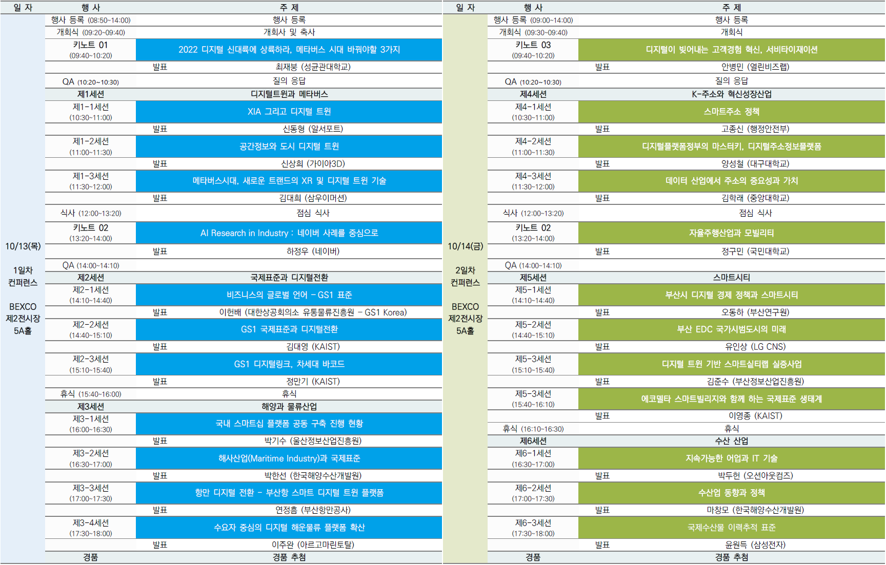

디지털 대전환 컨퍼런스 부산 2022
지자체‧산업계‧학계간 소통으로 디지털 대전환 시대에 혁신성장산업의 창출(성장)동력 마련
● 일시
‘22.10.13 (목) ~ 10.14 (금), ※2일간
부산 벡스코 제2전시장 5A홀 ● 참석
300여명 (기업, 학교, 연구소, 지자체, 대학교, 대학생/대학원생 등) ● 참가비
본 행사는 무료이며 별도의 등록비는 없습니다.
(점심식사와 무료주차권을 제공하지 않습니다. 이점 앙해 부탁드립니다.)
● 주최카이스트, 부산광역시, 오토아이디랩 ● 주관
부산정보산업진흥원, GS1 Korea, 주소기반산업협회, 부산상공회의소, 부산연구원, 한국해양수산개발원, 한국산업지능화협회, 부산정보기술협회, 부산서비스산업총연합회, 부산지식서비스융합협회, 미래전략캠퍼스, 동의대학교 인공지능그랜드ICT연구센터, 부산유비쿼터스 사물인터넷협회, 부산디지털혁신네트워크 ● 경품
양일 행사 마지막에 경품 추첨을 진행합니다.
* 행사 참관 등록 시 소속기관/기업명, 메일주소, 성함을 정확하게 기재 부탁드립니다.
13~14
October 2022 부산 벡스코 제2전시장 5A홀
행사 일정

키노트 발표자
디지털 대전환 컨퍼런스 부산 2022

성균관대학교 기계공학부
최재붕 교수
교육부 LINC3.0 성균관대 사업단장
사외이사, 신한금융지주
저서:메타버스이야기, 체인지나인, 포노사피엔스
디지털 트랜스포메이션을 디딤돌 삼아 혁명적 변화를 준비하던 인류에게 코로나는 대재앙이었습니다. 인류는 엄청난 속도로 디지털 문명속으로 강제 이동할 수 밖에 없었고, 이제 그것이 뉴노멀, 즉 새로운 표준이 되었습니다.
문명의 표준이 바뀌면 생각의 표준도 바뀌어야 합니다. 스마트폰을 신체의 일부처럼 사용하며 디지털 플랫폼에서 생활하는 표준인류, 포노 사피엔스는 무엇이 다를까요? 그들은 어떤 세계를 만들어가고 있을까요? 그 변화를 이해하고 준비해야 미래의 주인공인 될 수 있습니다.
본 강연에서는 데이터를 기반으로 코로나 이후의 뉴노멀 시대를 분석, 예측하고 개인과 기업이 신문명에서 생존하고 성장하기 위해 바꿔야 할 세가지를 제시합니다.
Location: 벡스코 제2전시장 5A홀 , 10월 13일
5G와 6G를 가능하게 할 기술혁신인 XIA는 메타버스 구현의 핵심 기술이 될 것으로 전망됩니다. XIA는 실제 물리적 계층과 디지털 트윈인 디지털 정보 계층의 인터페이스인 공간 반영 계층으로 작용하며, 디지털 트윈이 적용된 새로운 모델인 스페이셜 웹의 중추가 될 것입니다. 스페이셜 웹의 공간 확장 개념과 함께 디지털 트윈의 역할도 한 단계 고도화 시켜 줄 것으로 예상되는 XIA.
본 발표에서는 XIA가 디지털 트윈에 어떤 역할을 하는지와 함께, XIA가 적용된 디지털 트윈의 모습을 살펴볼 것입니다.
Location: 벡스코 제2전시장 5A홀 , 10월 13일
사물인터넷(IoT), CCTV, 드론, 라이다, 자율주행차, 모바일 매핑시스템(MMS), 지구관측위성, 스마트폰의 보급과 확산으로 인해 우리는 과거보다 더 빠르고 저렴하게 지구상의 각종 정보를 취득할 수 있게 되었습니다. 그리고 인터넷과 5G를 활용한 연결성은 관련 정보의 실시간 활용성을 극대화하고 있습니다. 데이터 분석, 인공지능 그리고 시각화 기술의 발전은 데이터의 빠른 처리, 최적화, 의사결정을 가능케 합니다.
현실 세계의 객체와 현상을 센서를 통해 모니터링하고 모델링함으로써 가상 세계에 빠르게 재현해낼 수 있는 이러한 기술 발전은 도시, 국토 문제 또한 디지털 트윈을 통해 분석하고 해결할 수 있으리라는 희망과 자신감을 제공합니다.
본 발표에서는 최근의 기술적 발전, 디지털트윈을 활용한 도시 및 국토 관리 동향, 표준화 움직임, 실제 구축 사례 등을 살펴보고, 도시 디지털트윈의 명암에 대해 논의합니다.
Location: 벡스코 제2전시장 5A홀 , 10월 13일
(주)삼우이머션은 VR, AR, XR 솔루션 개발 전문기업으로 창업초기부터 GIS 및 3D DATA를 기반으로 한 모니터링 솔루션 기술 개발에 집중투자를 하였습니다.현재는 BEYOND LINK라는 고객맞춤형 메타버스 플랫폼을 기반으로 한 산업 및 교육 분야 컨텐츠 전문기업으로 그 사업영역을 확대하고 있습니다.특별히 IMXR이라는 전문 산업 직무 훈련용 XR컨텐츠의 산업영역 확장을 지속적으로 이루어내고 있으며, SWXR CAMPUS라는 XR기반 직무훈련 및 인재양성 센터 설립을 통해 XR 기술의 교육훈련시장 확대를 주도하고 있습니다.
본 발표에서는 (주)삼우이머션의 GIS기술 기반 디지털트윈 솔루션인 VARLOS를 통해 산업분야 디지털트윈 기반 스마트 모니터링 솔루션 시장과 기술에 대해 살펴봅니다.
Location: 벡스코 제2전시장 5A홀 , 10월 13일
최근 10여년간 딥러닝의 급속한 발전으로 인해 AI는 이제 인터넷, 모바일과 같은 인프라 혹은 Enabler 기술로 진화하였습니다. 산업과 사회 발전 및 새로운 가치 창출의 핵이 된 것입니다. AI를 통한 혁신적인 비즈니스 기회 창출에 발맞추어 구글, 메타, MS 등 많은 기업들이 도전적인 문제 해결을 위해 자체 AI 연구 조직을 만들고, R&D 투자에 매진하고 있습니다.
학계와 산업계의 AI 연구는 유사한 부분이 많습니다. 하지만 실세계 문제 해결을 위한 도구를 만든다는 관점에서 산업계 AI 연구에는 고유한 특성이 존재합니다.
본 강연에서는 인터넷 플랫폼 산업계에서의 AI 연구에 대한 정의를 살펴 봅니다. 또한 실제 연구가 어떤 과정을 통해 서비스나 제품으로 이어지고 가치를 만들어 가는지에 대해 설명합니다. 최근 화두인 초대규모 AI를 포함한 네이버 클로바와 AI Lab 사례들을 통해서입니다.
Location: 벡스코 제2전시장 5A홀 , 10월 13일
식품, 소비재, 헬스케어 등 산업에서 널리 활용되고 있는 GS1 표준은 GS1 본부(브뤼셀)와 전 세계 116개국 GS1 회원기관 네트워크에 의해 관리되고 있는 「비즈니스의 글로벌 언어(Global Language of Business)」 입니다.
GS1 표준 시스템에는 GS1 표준의 대명사인 「바코드」 뿐만 아니라 온⦁오프라인 상거래와 공급망관리(SCM) 실행에 필요한 모든 표준 즉, 상품⦁물류단위⦁거래처⦁서비스의 식별(Identify)을 위한 표준, 기계에 의한 데이터 자동인식(Capture)을 위한 표준, 비즈니스 파트너간 정보의 공유(Share)를 위한 표준 등이 망라되어 있습니다.
어떤 산업에서든 SCM 실행, 디지털 전환을 추진하려면 GS1 표준 시스템 활용을 검토해야 합니다. GS1의 국내 전담기관(GS1 Korea)을 맡고 있는 대한상공회의소 유통물류진흥원은 글로벌 GS1 네트워크와 협력하여 기업의 GS1 표준 시스템 활용을 지원하고 있습니다.
Location: 벡스코 제2전시장 5A홀 , 10월 13일
우리가 사는 세상에서 매일 만들어지는 엄청난 양의 데이터는 다양한 이유로 파편화되고, 갈수록 다루기 어려운 복잡한 존재가 되고 있습니다. 본 발표에서는 AI, 메타버스, 스마트시티, 스마트산업과 같은 데이터를 필수적으로 요구하는 미래 기술과 사회를 위해 굿데이터를 지속가능하게 만들어 나가는 전세계 산업계의 노력을 공유하려고 합니다.
특히 국제표준식별자와 같은 상호운용중심점(PPI), 국제표준인 BIM/GIS 공간정보, 비즈니스/산업표준인 GS1, 웹 데이터 표준, 모빌리티 인프라, 다양한 산업표준 데이터(예. 조선해양해운항만, 수산, 철도산업, 헬스케어) 간의 상호운용성 확보를 통한 데이터 구축 및 활용전략을 제시합니다.
Location: 벡스코 제2전시장 5A홀 , 10월 13일
바코드는 POS 단말기에서 가격을 편리하게 조회하여 판매자와 구매자에게 정보를 전달하는 표준이 되었습니다. 인터넷과 모바일의 발달로 인해 바코드는 가격 정보뿐만 아니라 제품의 다양한 정보를 전달하기 위해 데이터 매트릭스 코드나 QR코드로, 형식이 변화되고 있습니다.
작금의 빅데이터 시대, 특정 제품에 대해 자세히 알아보려는 소비자나 정확한 제품의 데이터와 공급망 정보를 통해 효율성을 높이려는 소매업체를 위해 기업들은 제품 정보를 더 쉽고 간편한 방식으로 제공하려고 노력 중인데요. 글로벌 비즈니스 운영에 있어 제품의 식별, 자동 데이터 캡처, 공급망 가시성, 정보 공유 기능이 더욱 중요해짐에 따라 본 발표에서는 GS1 디지털링크가 무엇이며, 차세대 바코드는 무엇인지, 그 활용 방법과 기업의 전략 방향에 대해 공유하려 합니다.
Location: 벡스코 제2전시장 5A홀 , 10월 13일
조선·해운·항만·선급·기자재 등의 스마트화가 진행되면서 글로벌 플랫폼들이 만들어지고 있습니다. 이러한 트렌드에 대응하여 국내에서 대중형 조선소 및 관련 기관들이 연합하여 공동 플랫폼을 구축하는 사업을 진행하고 있으며, 범 국가 차원의 산업계간 데이터 생태계 조성을 추진하고 있습니다. 이러한 데이터 생태계 조성을 위해서는 국제 표준을 기반으로 하여 글로벌 상품으로서의 위상을 확보할 필요가 있습니다.
본 세션에서는 국내 조선해양 산업에서 현재 진행되고 있는 국제 표준기반 데이터 생태계 조성 계획 및 추진 현황을 공유하여 범 국가 차원의 협력 방안을 제시하고자 합니다.
Location: 벡스코 제2전시장 5A홀 , 10월 13일
최근 해사분야(Maritime Industry) 신산업이 계속해서 창출되고 있습니다. 국제해사분야에서 선박평형수처리설비, 스크러버 탈황장치, 친환경선박, 자율운항선박에 이르기까지 해사 IMO 규제를 기반으로 신산업이 지속적으로 창출되고 있습니다.
특히 해사산업은 IMO 규제강화에 따라 규제를 만족시키기 위한 국제표준을 만들어 내고 있습니다. 사이버보안, 해상통신∙정보제공, 원격모니터링 등 해양안전정보서비스, 황산화물(SOx), 질소산화물(NOx) 대체연료 등 대기오염저감기술, 선박운항∙조정, 선박유지보수, 화물관리 등 자율운항기술, 선박평형수처리, Biofouling, 선박 소음 등 해양생태계 교란방지기술 등 주요 해사 신산업을 이루고 있으며 IMO, ISO, IEC 국제표준을 기반으로 발전하고 있습니다.
Location: 벡스코 제2전시장 5A홀 , 10월 13일
스마트 항만의 구축은 4차 산업혁명 시대에 있어, 선진 항만의 경쟁력 확보 차원에서 무척이나 중요합니다. 운영비용 절감, 생산성 향상, 화물하역 속도 제고 등 물류 효율성이 증대되는 효과가 큽니다. 항만은 24시간 365일 운영되기 때문에, 컨테이너 선박의 정기 운항 스케줄에 맞춰 작업계획이 사전에 확정되어 있어, 특정 선박의 지체 발생 시에도 전체 작업계획의 변경이 어려우며, 특히, 배후물류에 있어서는 화물차량의 최적 도착이 항만의 생산성과 혼잡도를 결정하는 요인이 됩니다.
부산항의 디지털 트윈 플랫폼을 통해 항만 내･외부 환경의 다양한 변수를 예측하고, 시뮬레이션이 가능하며, 이해관계자들의 데이터를 포함한 현재 상황 모니터링과 이를 기반으로 한 의사결정을 지원합니다. 디지털 트윈 플랫폼을 통해 선박-항만-배후물류간 최적 스케줄링을 통해 항만내 하역작업의 효율성을 높이고, 물류 수송수단의 지･정체 감소에 따른 대기오염 저감과 사회적 비용을 최소화할 수 있는 장점이 있습니다.
Location: 벡스코 제2전시장 5A홀 , 10월 13일
4차 산업혁명이라는 급격한 기술 혁신 속에서 규격화된 컨테이너 운송을 중심으로 글로벌 대형 선사와 물류 업체들은 해운물류 플랫폼을 개발하고 서비스를 확장하고 있습니다.
본 발표에서는 해운물류 플랫폼이 가져온 글로벌 해운시장에서의 변화와 더불어 비컨테이너인 벌크 운송에서의 적용 한계점을 개선하고 현장 수요자들의 요구를 반영한 디지털 해운물류 플랫폼에 대한 개발 과정을 공유하고자 합니다.
특히 보수적인 항만의 디지털전환을 위하여 현장 네트워크를 활용한 다수의 참여자 확보와 업무 협업을 통한 최적화 의사결정 시뮬레이션 등 효율성을 극대화하는 확산 전략을 제시합니다.
Location: 벡스코 제2전시장 5A홀 , 10월 13일


행사 정보
장소
부산광역시 벡스코 제2전시장
부산광역시 해운대구 APEC로 55
교통
지하철
•2호선 센텀시티(벡스코)역 > 2전시장‣센텀시티역 1번 출구로 나와서 오디토리움을 지나 약 380m 도보로 진입•2호선 벡스코(시립미술관)역 > 2전시장
‣벡스코역 5번 출구로 나와서 부산시립미술관을 지나 약 453m 도보로 진입 KTX/SRT•부산역 : 급행버스 1001(소요시간 40분), 일반버스 40(소요시간 50분) 항공•택시 : 김해국제공항 택시 승차 후 벡스코에서 하차(거리 31.9km / 약 45분 소요)
•버스 : 일반버스 307(소요시간 : 약 1시간 28분 소요)
호텔/숙박
부산 관광에 대한 모든 정보는 www.visitbusan.net 을 통해 확인해주세요.